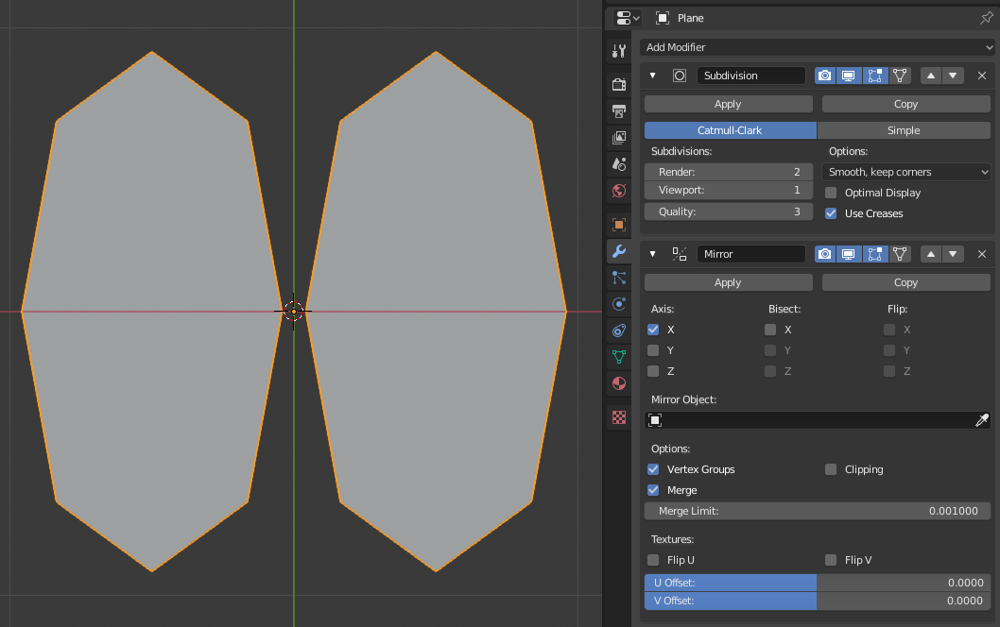
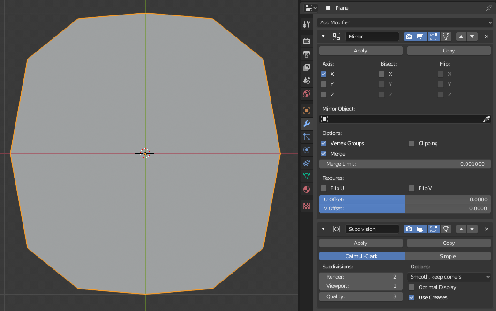
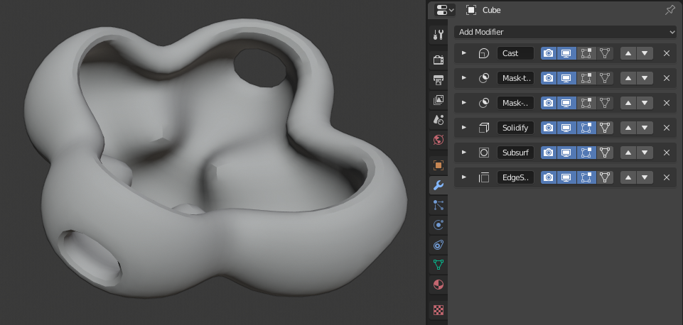

Giới thiệu¶
Modifier là các thao tác tự động ảnh hưởng đến hình học của object theo cách không phá hủy. Với modifier, bạn có thể tự động thực hiện nhiều hiệu ứng mà nếu làm thủ công sẽ rất mất công (như subdivision surface), mà không ảnh hưởng đến hình học gốc của object.
Chúng hoạt động bằng cách thay đổi cách một object được hiển thị và render, chứ không thay đổi phần hình học mà bạn có thể chỉnh sửa trực tiếp. Bạn có thể thêm một vài modifier vào một object để tạo thành The Modifier Stack và Apply một modifier nếu bạn muốn thay đổi của nó trở nên vĩnh viễn.
Chúng có thể được thêm vào object đang active bằng operator Add Modifier, nút "Add Modifier" ở đầu tab Modifiers trong Properties Editor, hoặc dùng Shift-A trong cùng tab đó. Modifier mới luôn được thêm vào cuối stack (tức là sẽ được áp dụng sau cùng).
Có rất nhiều modifier dựng sẵn nhưng Blender cũng cho phép người dùng tự tạo modifier riêng thông qua Geometry Nodes.
Các danh mục¶
Có bốn danh mục modifier dựng sẵn:
- Edit
Tương tự như các modifier Deform (xem bên dưới), tuy nhiên chúng thường không ảnh hưởng trực tiếp đến hình học của object, mà ảnh hưởng đến một số dữ liệu khác, chẳng hạn như vertex group.
- Generate
Các modifier mang tính xây dựng/phá hủy, ảnh hưởng đến toàn bộ Topology của mesh. Chúng có thể thay đổi diện mạo chung của object, hoặc thêm hình học mới vào nó...
- Deform
Khác với các modifier Generate ở trên, những modifier này chỉ làm thay đổi hình dạng của object mà không làm thay đổi topology của nó.
- Simulate
Đại diện cho các mô phỏng vật lý. Trong hầu hết trường hợp, chúng được tự động thêm vào modifier stack bất cứ khi nào một Particle System hoặc mô phỏng Physics được bật. Vai trò duy nhất của chúng là xác định vị trí trong modifier stack mà từ đó dữ liệu nền được lấy ra cho mô phỏng mà chúng đại diện. Vì vậy, chúng thường không có thuộc tính riêng và được điều khiển bằng các cài đặt hiển thị trong những phần riêng biệt của Properties Editor.
Bạn cũng sẽ thấy một danh mục gọi là "Hair", danh mục này đến từ một Asset Library được đóng gói kèm theo Blender. Xem Các Node Hair để biết thêm thông tin.
Người dùng có thể tự tạo danh mục riêng bằng cách biến các geometry node group thành asset và gán chúng vào một Asset Catalog. Tên của catalog này sẽ là tên danh mục. Nếu người dùng tạo một catalog trùng tên với một trong các danh mục dựng sẵn thì node group sẽ được thêm vào cuối menu tương ứng.
Các Node Group không phải là asset hoặc không thuộc danh mục nào sẽ xuất hiện trong menu con "Unassigned".
Ghi chú
Geometry Node Group phải có thuộc tính Modifier được bật thì node group mới xuất hiện trong menu Add Modifier.
Interface¶
Giao diện của mỗi modifier dùng chung các thành phần cơ bản giống nhau, xem Hình Bố cục panel (lấy Subdivision Surface làm ví dụ)..

Bố cục panel (lấy Subdivision Surface làm ví dụ).¶
Ở trên cùng là header của panel. Mỗi icon đại diện cho một cài đặt khác nhau của modifier (từ trái sang phải):
- / Mở rộng
Thu gọn modifier để chỉ hiển thị header mà không hiện các tùy chọn của nó.
- Type
Một icon dùng làm tham chiếu thị giác nhanh về loại modifier.
- Name
Mỗi modifier có một tên riêng biệt trên mỗi object. Hai modifier trên cùng một object phải có tên khác nhau, nhưng hai modifier trên các object khác nhau có thể trùng tên. Tên mặc định dựa trên loại modifier.
- On Cage Meshes
Tùy vào cài đặt trước đó, nếu bật, hình học đã qua modifier cũng có thể được chỉnh sửa trực tiếp, thay vì hình học gốc.
Cảnh báo
Mặc dù nó hiển thị các phần tử được chỉnh sửa ở vị trí cuối cùng sau modifier, bạn vẫn đang chỉnh sửa dữ liệu gốc.
Trong những tình huống hai vị trí không trùng nhau, điều này có thể dẫn đến hành vi dễ gây nhầm lẫn, vì vậy bạn có thể muốn tắt nó trong những trường hợp ấy.
Cũng cần lưu ý rằng một số tính năng không dùng vị trí cage, bao gồm:
Đích snap, chẳng hạn như snap vào vertex.
Transform gizmo dùng vị trí gốc.
- Apply On Spline Curves Surfaces Text
Áp dụng toàn bộ modifier stack tính đến và bao gồm modifier đó lên các điểm điều khiển của curve hoặc surface, thay vì lên hình học tessellate của chúng.
Ghi chú
Theo mặc định, curve, text và surface luôn được chuyển thành hình học dạng mesh trước khi modifier stack được tính toán trên chúng.
- Edit Mode
Hiển thị hình học đã qua modifier trong Edit Mode, cùng với hình học gốc mà bạn có thể chỉnh sửa.
- / Realtime
Bật/tắt khả năng hiển thị hiệu ứng của modifier trong 3D Viewport.
- / Render
Bật/tắt khả năng hiển thị hiệu ứng của modifier trong bản render.
Ghi chú
Các icon Square, Triangle và Surface có thể không khả dụng, tùy vào loại object và loại modifier.
- Bổ sung
- Apply Ctrl-A
Biến modifier thành "thật": chuyển hình học của object để khớp với kết quả của modifier đã áp dụng, rồi xóa modifier đi.
Khi áp dụng modifier lên một object có dùng chung Object Data giữa nhiều object, trước tiên object đó phải được chuyển thành Single User; việc này có thể thực hiện bằng cách xác nhận thông báo pop-up.
Lưu ý, modifier không thể áp dụng cho các loại object Empty, hãy dùng Visual Geometry as Mesh thay thế.
Cảnh báo
Áp dụng một modifier không nằm đầu stack sẽ bỏ qua thứ tự stack (nó sẽ được áp dụng như thể là modifier đầu tiên), và có thể tạo ra kết quả không như mong muốn.
- Apply as Shape Key
Lưu kết quả của modifier đó vào một shape key tương đối mới rồi xóa modifier khỏi modifier stack. Tùy chọn này chỉ khả dụng với các modifier không ảnh hưởng đến topology (thường chỉ là các modifier Deform).
Ghi chú
Mặc dù về nguyên tắc nó có thể hoạt động với bất kỳ loại hình học nào hỗ trợ shape key, hiện tại nó chỉ hoạt động với mesh.
- Save as Shape Key
Lưu kết quả của modifier đó vào một shape key tương đối mới và giữ lại modifier trong modifier stack. Tùy chọn này chỉ khả dụng với các modifier không ảnh hưởng đến topology (thường chỉ là các modifier Deform).
- Duplicate Shift-D
Tạo một bản sao của modifier nằm ngay dưới modifier hiện tại trong stack.
- Copy to Selected
Sao chép modifier từ object đang Active sang tất cả các object được chọn.
- Move to First/Last
Di chuyển modifier đến vị trí đầu tiên hoặc cuối cùng trong modifier stack.
- Pin to Last
Giữ modifier ở cuối modifier stack. Khi một modifier được ghim, một icon hình ghim sẽ hiển thị ở bên phải header của panel.
- Move to Nodes
Chuyển node tree hiện có của Geometry Nodes Modifier thành một group node để tái sử dụng trong các node tree khác. Xem Operator Move to Nodes để biết thêm thông tin.
Operator này chỉ khả dụng cho Geometry Nodes Modifier.
- Delete X, Delete
Xóa modifier.
- (Di chuyển)
Di chuyển modifier lên/xuống trong stack, làm thay đổi thứ tự tính toán của các modifier.
Modifier sẽ không thể di chuyển nếu Pin to Last đang được bật.
Bên dưới header này, tất cả các tùy chọn riêng của từng modifier sẽ được hiển thị.
Mẹo
Dùng Alt để tác động cùng lúc lên tất cả các object được chọn khi thực hiện các operator như thêm, áp dụng, xóa và di chuyển đến vị trí chỉ định.
Xem Chỉnh sửa nhiều Object để biết thêm thông tin.
Modifier Stack¶
Modifier là một chuỗi thao tác không phá hủy có thể được áp dụng lên trên hình học của object. Bạn có thể áp dụng chúng theo gần như bất kỳ thứ tự nào. Loại chức năng như vậy thường được gọi là "modifier stack" và cũng xuất hiện trong một số ứng dụng 3D khác.
Trong một modifier stack, thứ tự áp dụng các modifier ảnh hưởng đến kết quả. Vì vậy, các modifier có thể được sắp xếp lại bằng cách nhấp vào (icon grip) ở góc trên bên phải, rồi di chuyển modifier được chọn lên hoặc xuống. Ví dụ, hình ảnh dưới đây cho thấy các modifier Subdivision Surface và Mirror đã đổi chỗ cho nhau.
 Modifier Mirror là phần tử cuối trong stack và kết quả trông như hai bề mặt tách biệt.¶ |
 Modifier Subdivision Surface là phần tử cuối trong stack và kết quả là một bề mặt duy nhất đã được hợp nhất.¶ |


Các modifier được tính toán từ trên xuống dưới trong stack. Trong ví dụ này, kết quả mong muốn (bên phải) đạt được bằng cách tạo mirror cho object trước, rồi sau đó tính toán subdivision surface.
Modifier đang active¶
Một modifier trong stack có thể được chọn để đánh dấu là Active; modifier đang active hiển thị một đường viền quanh panel của modifier. Để đặt modifier active, hãy chọn vào vùng nền panel của modifier, icon của modifier, hoặc chọn một modifier trong Outliner.
Modifier đang active được Geometry Node Editor dùng để xác định node group nào đang được chỉnh sửa.
Ví dụ¶

Trong ví dụ này, một khối lập phương đơn giản đã subdivided được biến thành một object khá phức tạp nhờ một stack các modifier.¶